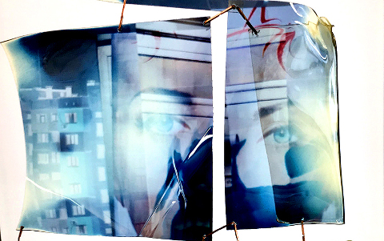

Ivan Paskalev

Ivan Paskalev *1980 in Sofia, Bulgarien. Studium der Kunstpädagogik und Kunstgeschichte, LMU München. Freier Mitarbeiter bei VICE Magazine, Bulgarien. Mitbetreiber, Kurator bei Club Vlaikova, Sofia. Wissenschaftlicher Mitarbeiter bei „Digitale Visualisierungskonzepte“ der Virtuellen Hochschule und des Instituts für Kunstpädagogik, LMU München. Freischaffender Künstler bei PLATFORM München. ivanpaskalev.com
Ausstellungen (u.a.): Westendstudios15, München – Galerie Pfefferle, München 2016 – FOE Galerie, München 2017
12:55
2015-2017 – Videoinstallation Fotos, Video, Grafik –
LCD-Monitor, Polaraistationsfolie, Quartz-Uhrwerk
Idee + Konstruktion + Video + Foto + Grafik: Ivan Paskalev
Material- und Mediums-Dekonstruktion. Unsichtbare Bilder auf bearbeiteten Bildschirmen werden durch spezielle Folien sichtbar gemacht, die als Mobiles, angetrieben von Quartz-Uhrwerken vor den industriellen Objekten hängen. Sie geben prismatische Einblicke auf Videocollagen alltäglicher visueller Eindrücke, Lichter, Formen und Farben, die in Fotos, Videos und digitale Grafiken gebannt wurden.